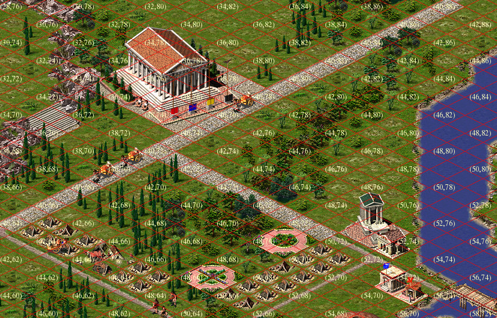
I hope the previous post about reverse-engineering Caesar III, which described the algorithm for extracting textures from the original game's resources, was well received. In this article, I will describe the map format, the algorithm for selecting and ordering tiles for rendering, and the formation of the final texture.
Tiles
If you know what a tile is, you can skip this section. A tile is a fixed-size image formed so that when drawn next to other tiles, it creates a continuous image without "seams." Here's an example of grass textures from Caesar III:
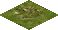

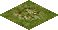


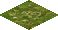
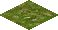

If you arrange them side by side in a certain order and add some tree textures, you get a certain area of land. And if you add another type of tile to this picturesque scene, for example, with a road image, you can already create a primitive map.
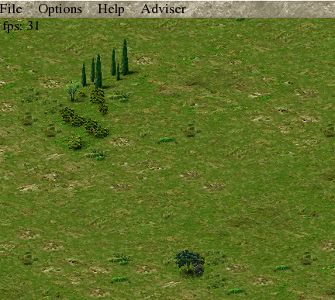
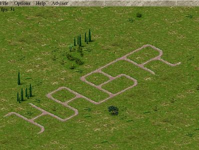
Isometric Perspective
You've probably noticed that the presented images are not square, but diamond-shaped. This is done to give the image a sense of volume (depth). Such a tile looks turned with one corner towards the viewer and as if going into the depth, the two-dimensional picture acquired a third dimension. To create the effect of volume, the width should be about half the length. The tile base in Caesar III is 58×30 pixels, this is the minimum tile size that the game engine operates with.
In the early stages of the remake development, one unpleasant effect occurred: the textures in the game were created without transparency, and displaying them on the screen without additional processing led to the following result:
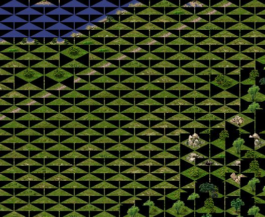
The solution to this situation is as follows: either use a mask, for example, the color of the leftmost pixel is accepted as transparent, or add an alpha channel to the textures. The first option was used in the original game, the second is used in the remake: textures are prepared at the resource loading stage.
Map Format
A map is an array that defines the position of tiles on a layer and their parameters. In the simplest case, a map is an M×N matrix, where each element contains an identifier (number) from a conditional "tile palette." Tiles don't necessarily have sequential numbers; tile numbers are divided into several intervals and named spaces. For example, tiles of earth, trees, water, faults, and grass have indices from land1a_00001 to land1a_00303. Caesar III allows the use of square maps ranging from 30×30 to 160×160 tiles. A tile is positioned on the map so that its upper boundary is "north."
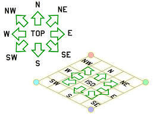
Rendering Order
To draw tiles on the screen, you need to consider the distance to them. If you simply draw tiles in the order they are placed on the map, you get gibberish, as some tiles were drawn at the wrong time.
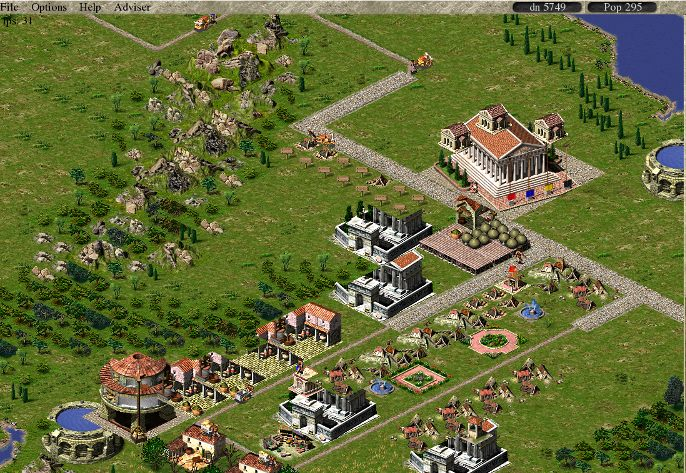
The following image shows the sequence in which tiles should be drawn:
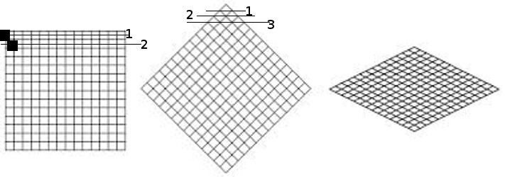
1. The first figure shows the order of rendering tiles on a 2D map to create a depth effect.
2. The second figure shows the order of rendering tiles on a 2.5D map, considering that the higher the tile is located, the earlier it should be rendered.

This image is formed from the following tiles, rendered in the correct order:

Rendering Algorithm
In general, the code for generating tile indices for rendering will be as follows:
// Form the upper part of the rendering "diamond"
tilemap map; // surface map
tilearray tiles; // rendering order
for( j=0; y < map_size; j++ )
{
for( t=0; t <= j; t++ )
{
tiles.append( map[ t , map_size - 1 - ( j - t ) ];
}
}
// Form the lower part of the rendering "diamond"
for( i=1; i < map_size; i++ )
{
for( int t=0; t < map_size-i; t++ )
{
tiles.append( map[ i + t, t ] );
}
}Drawing the City
Additional conditions that arise when rendering a city:
- The map contains not only static tiles of land, grass, and buildings, but also moving objects (people, animals, animations)
- There are objects that can be passed through (arch, gates, barn)
- Additional animation of tiles and objects
- Non-square objects
These conditions complicate the rendering process and create additional rendering rules:
- The movement of characters on an isometric map doesn't happen just like that. The map is turned "into depth" and its absolute size vertically doesn't match the size horizontally. Therefore, any walking object should move "up" accordingly; in the simplest case, two steps to the side equals one step into depth.
- A moving object can be in different parts of a tile and is drawn after displaying the main tile image, which can cause display artifacts, for example: a chariot rides over gates. This is bypassed by drawing additional sprites that will be shown after rendering moving objects.
 +
+
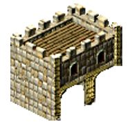
=
- Animation can go beyond the main image size; here you should consider such a feature that it (animation) can go up and to the right, but not down and to the left, otherwise it will be covered by the following tiles.
- For the most part, the game uses square objects, but there are also extended ones; to simplify the rendering algorithm, they are broken into smaller (square) parts, for example, a hippodrome.
 =
=
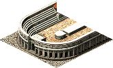
+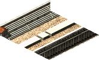
+
Rendering Passes
- In the first pass, "flat" tiles and moving objects on them are drawn
- In the second pass, tiles whose images can extend beyond the tile base are drawn
- Additional animation is drawn for tiles that have such a flag
Anticipating possible questions: This algorithm was restored from the original game, as far as I could understand it; it may be changed in later versions. Advice on organizing the rendering cycle is welcome.
Caesar III Map File Format
Directly related to the objects that will be displayed in the city, the first five data blocks in the *.map file. We read from the beginning of the file, reading data one after another without gaps:
- short tile_id[26244] — contains element identifiers, each identifier corresponds to its texture. For example, the group of identifiers 246-548 corresponds to textures land1a_00001-land1a_00303, these are textures of earth, trees, etc., which were described above.
- byte edge_data[26244] — the array contains information about the size of the object for which the texture was selected in the tile_id array
- short terrain_info[26244] — the array contains surface characteristics for a specific tile: earth, water, road, wall, etc. (full information on these flags)
- byte minimap_info[26244] — basic information for building a minimap, also participates in some calculations during the game, acting as a kind of "random numbers" array.
- byte height_info[26244] — this array describes the height of the tile above the surface: 0 for ground, 1 for 15 pixels, 2 for 30 pixels, etc.
Practical Application
More detailed information about Caesar III and the progress of the remake development can be found in our wiki on bitbucket.org.
Special thanks to Bianca van Schaik for help in writing the article and providing materials.
And finally, a small test screenshot: Etruscan spearmen are rampaging in the city of fountains:
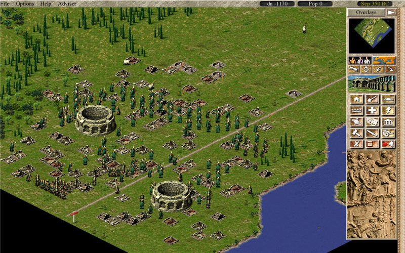
← All articles